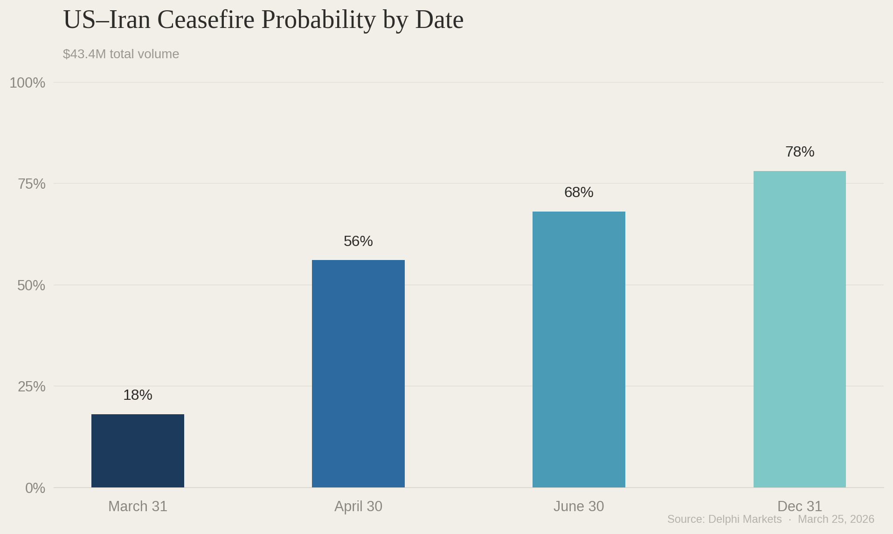
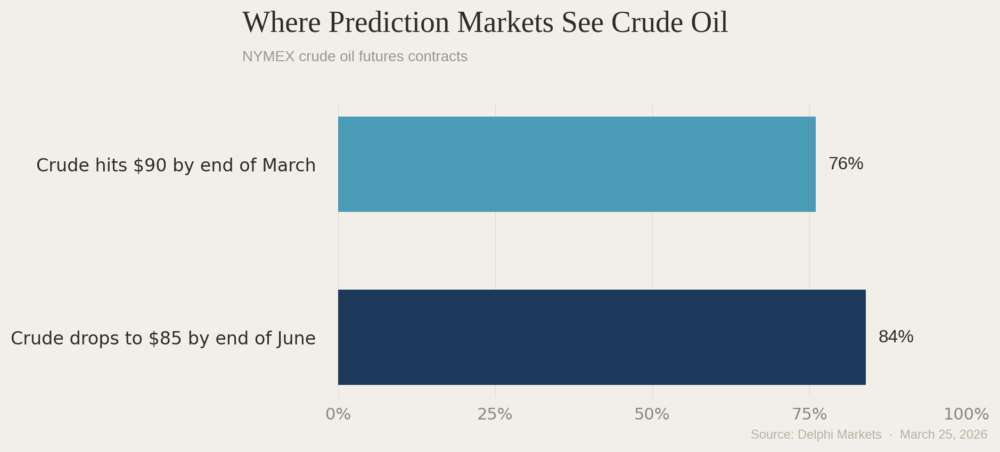

On March 23, Nikolay Kozhanov, a research associate professor at Qatar University, published a piece in Al Jazeera with a strong claim about the global energy crisis. The headline: "Why the oil and gas price shock from the Iran war won't just fade away."
"Unlike sanctions-driven disruptions," Kozhanov wrote, "a sustained blocking of the Strait of Hormuz obstructs not only trade routes, but the very ability of producers to export, pushing markets beyond adjustment mechanisms into forced demand destruction and structural reconfiguration."
The 2022 Russia-Ukraine oil shock was driven by sanctions. Oil kept flowing through alternate channels. Traders rerouted. Governments released reserves. Prices spiked and then came back down. But 2026, he argued, is fundamentally different. The Strait of Hormuz is physically closed. Twenty percent of the world's oil isn't being rerouted but is simply offline. The tools that worked in 2022 can't fix a blockade.
It sounds right. It might even be right for the next few weeks. But $270 million in prediction market volume say it's wrong about what happens after that.
What the Money Says
According to Delphi, there are now 230 active prediction markets related to the Middle East conflict with a combined trading volume north of $270 million. These contracts prices real outcomes and tell a story nothing like the one Kozhanov is selling.
The US-Iran ceasefire contract, currently the most liquid market with over $43.2 million in volume, priced a 68% chance that a ceasefire is reached by June 30, and 78% by the end of year. A separate contract prices Trump announcing the end of military operations against Iran by June 30 at 77%, with $5.8 million traded. Even the April 30 outcome sits at 56%

On the question that matters the most for oil prices, the Strait of Hormuz. Traders have put the odds of traffic returning to normal before June 1 at 67%. Before July 1, that rises to 77%.
Kozhanov's thesis depends on the word "sustained." He writes that "the longer the war continues and the longer the free transit through the strait remains disrupted, the longer the prices of oil and gas will remain high." Though true, the question is whether the disruption is sustained. The market's shows it isn't.

The Suspicious Wallets
On March 21, two days before the Al Jazeera piece went live, ten wallets appeared out of nowhere. No prior transaction history. Created at the same time. Together they wagered $160,000 on a US-Iran ceasefire by March 31, a bet that would pay out over $1 million if it hit.
One of the accounts had history. It had previously bet that the US would strike Iran on February 28, the exact date the war started, created right before the strikes.
The Guardian reported the bets were likely made with insider knowledge. The Times of Israel confirmed the suspicious pattern. Polymarket rewrote its rules. Two senators introduced legislation to regulate prediction markets. Kalshi banned two traders.

Whether these wallets reflect genuine insider knowledge or not, the signal itself cuts against Kozhanov’s thesis. Someone with money and apparent information was betting on resolution at the exact moment Al Jazeera was publishing permanence.
Where Money Sees Oil Going
The strongest part of Kozhanov's argument is his rejection of the 2022 comparison. He writes that in 2022, the release of 180 million barrels of oil "helped manage the energy price shock as it somewhat alleviated fears of shortages." But this time, the 400 million barrel release "is unlikely to have the same effect because it is not addressing the root problem: the physical outage."
Although reserves don’t reopen a strait, the market doesn't think reserves are the solution. The markets think the war ending is, and it’s pricing oil accordingly.
The NYMEX crude oil futures contract on whether crude hits $90 per barrel by the end of June is priced at 76% with $55 million in volume. For June, a separate contract gives an 84% chance that crude drops to $85 or below by the end of June, with $2 million traded.

These contracts together show a simple trajectory. Oil at roughly $90 today, declining to $85 or below by summer, where tens of millions of dollars are priced.
Goldman Sachs landed on essentially the same number. One day after Kozhanov's piece, the bank projected a full-year Brent average of $85. The EIA went further, forecasting crude falling to around $70 by December.. The Dallas Fed projected prices declining rapidly once the strait reopens.
Three institutions, three models, one direction: down.
Meanwhile, the 2022 comparison that Kozhanov dismisses keeps looking relevant. The IEA response this time is 400 million barrels, double the 180 million deployed in 2022. The US lifted sanctions on 140 million barrels of Iranian oil which are already on ships. Russian crude sanctions have been eased. Brent peaked at $139 in 2022 and roughly $120 this time. US gas hit $5.01 in June 2022 but only at $3.58 today.
The Al Jazeera piece says the 2022 playbook won't work but prediction markets are pricing as if it already is.
Slow is not permanent
Kozhanov isn't wrong about everything. You can't reroute 20 million barrels a day through a 21-mile waterway under active military attack. The LNG market has no reserve equivalent. Iranian missiles hit refineries across the Gulf. The recovery will be slow and painful.
But markets have priced in “slow and painful” explaining the April Hormuz contract at 39%. The market doesn’t expect the strait to get back to normal next month but neither does it price the damage as permanent.
Kozhanov's article moves from "recovery will take time," which the markets agree with, to "the shock won't fade away," which $270 million in trades directly contradicts. Traders understand the choke point, infrastructure damage and stranded ships. It just prices an ending that his articles fail to consider.
This is 2022, but worse. And like 2022, it ends.